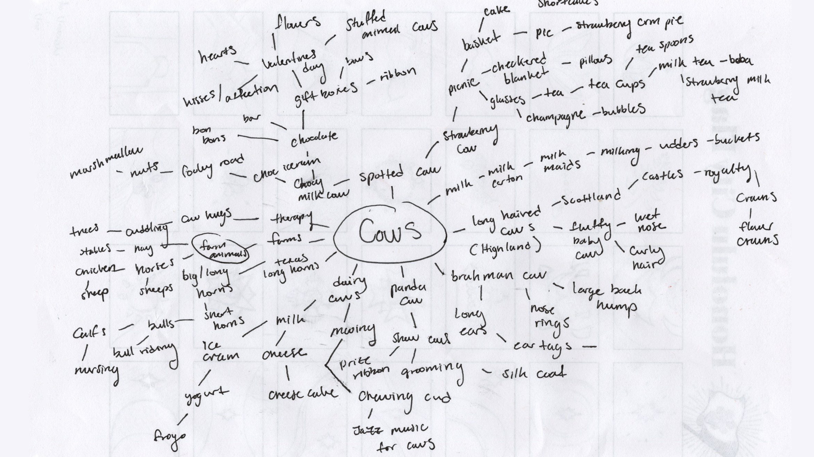

Félicité
Bovine Love
Style frames for Motion Graphics

About The Project
Goal
The goal was to create a set of style frames depicting only one word: cows.
Research and Sketching
How can I make the viewer think 'cows' without telling them? Flowers? Hills? Horns? Milk? I wanted to show my personal love for bovine and their beauty in these art nouveau inspired illustrations. While sketching I kept in mind round shapes and small whispy details to showcase the softness of the creatures. I also kept in mind classic nature posters to give it that clean but hand-made feel.
Scope
Project Type: Style Frames
Software: Adobe Photoshop/ Illustrator
